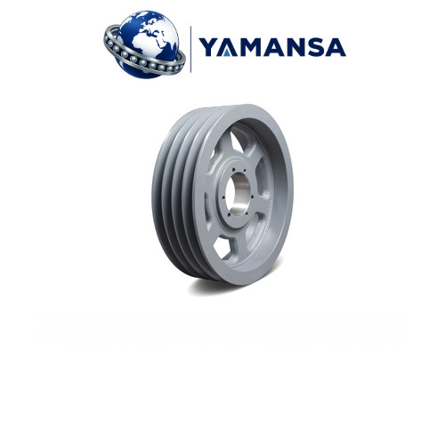

SPB 400x5 Burçlu V Kasnak 5 Kanallı 3535 Burç Ø400 mm
| Profil SPB | Anma Çapı 400 mm | Dış Çap 407 mm | Kanal 5 | Burç No 3535 | Maks. Mil 90 mm |
Profil, çap, kanal ve burç bilgileri aşağıdaki teknik liste ile birlikte değerlendirilmelidir. Satış birimi: Adet.
SPB 400x5 Burçlu V Kasnak 5 Kanallı 3535 Burç Ø400 mm
SPB 400x5 Burçlu V Kasnak, 400 mm anma çapında ve 5 kanallı bir kayış aktarma elemanıdır. SPB profilinde mevcut kayışın kesit kodu, kasnak seçiminde ilk kontrol noktasıdır. Seçimde kasnağın karşı elemanla geometrik uyumu ve mile bağlantısı birlikte ele alınır. Anma çapı, milin gireceği deliğin çapı değildir.
Dış çapı 407 mm olan SPB 400x5 için P anma çapı ile O dış çapı farklı ölçülerdir. Mevcut bir kasnağın yerine seçim yapılırken yalnız dış görünüşe bakmak yerine anma çapı ve bağlantı ölçüleri karşılaştırılmalıdır. SPB 400x5 için gövde tanımı Tip 5: kollu gövde, göbek iki yanda içeride. Göbek konumu, kasnak yüzleriyle mil üzerindeki diğer parçalar arasındaki yerleşim açısından değerlendirilir.
Teknik Özellikler
- Profil: SPB
- Kanal Sayısı: 5
- Anma Çapı (P): 400 mm
- Dış Çap (O): 407 mm
- Gövde Tipi: Tip 5 – Kollu gövde, göbek iki yanda içeride
- Burç No: 3535
- Maks. Mil Çapı: 90 mm
- Kasnak Genişliği (F): 101 mm
- Jant İç Çapı (J): 357 mm
- Göbek Uzunluğu (L): 89 mm
- Göbek Çapı (N): 175 mm
- Göbek Girintisi (K): 6 mm
- Göbek Girintisi (M): 6 mm
- Satış Birimi: Adet
Kullanım Alanları
SPB 400x5; fan, pompa, konveyör ve benzeri kayışla hareket iletilen makine düzenlerinde, ölçüleri mevcut sisteme uyuyorsa değerlendirilebilir. 5 kanallı yerleşimde paralel kayışların kanal hizaları birlikte kontrol edilir; yalnız bir kanalı ölçmek yeterli değildir. Uygunluk, yalnız makinenin adına göre değil karşı kasnak, kayış kesiti, mil bağlantısı ve montaj alanı birlikte incelenerek belirlenir. Diğer ölçüler için kasnaklar kategorisi karşılaştırmaya yardımcı olur.
Konik Burç ve Montaj
Uyumlu burç: 3535. SPB 400x5 kasnağında burç modelinin yanı sıra seçilen burcun iç çapı da mil ile eşleştirilmelidir. Konik burç, sıkma sırasında konik yüzeyler üzerinden kasnak ile mil arasında bağlantı kurar. SPB 400x5 montajından önce temas yüzeyleri, kama bağlantısı ve hizalama kontrol edilmelidir; sıkma işlemi kullanılan burcun üretici talimatına göre yapılır. Burç kendi model ve iç çapıyla tanımlanan ayrı bir bağlantı elemanıdır. Konik burçlar içinden seçim yaparken bu iki bilgi birlikte okunmalıdır.
Kayış Seçimi
SPB 400x5 için SPB dar V kayışı seçilirken profil, kayış uzunluğundan ayrı değerlendirilir. 5 kanal bilgisi kayışın uzunluğunu belirlemez; uzunluk seçimi karşı kasnağın çapına ve iki mil arasındaki mesafeye de bağlıdır. Mevcut bir sistemde kayış üzerindeki kesit ve uzunluk işareti kontrol edilmeli, gerginlik yalnız elle hissedilerek ayarlanmamalıdır. SPZ, SPA, SPB ve SPC dar V kayışları arasından doğru kesitle ilerlenebilir.
Kısa SSS
Anma çapı mil çapı mıdır? Hayır; SPB 400x5 üzerindeki 400 mm değeri kasnağın anma çapını belirtir. Bu SPB 400x5 ölçüsünde belirtilen maksimum mil çapı 90 mm sınırıdır; bu değer, her burcun bu iç çapta olduğu anlamına gelmez. Mil bağlantısı için uyumlu burcun iç çapı esas alınır.
Yalnız fotoğrafa göre seçim yapılır mı? SPB 400x5 için seçimde teknik ölçüler esas alınmalıdır. Fotoğraf temsilî olabilir; kanal adedi, gövde biçimi ve burç kodu teknik listeyle karşılaştırılmadan montaj uyumu varsayılmamalıdır. Satış birimi adettir.